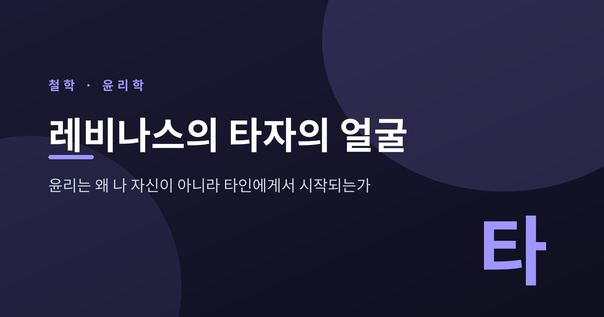
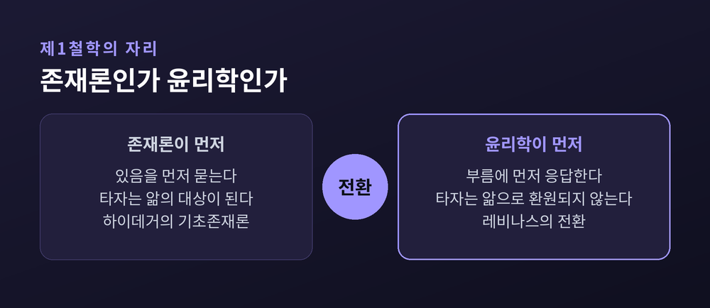
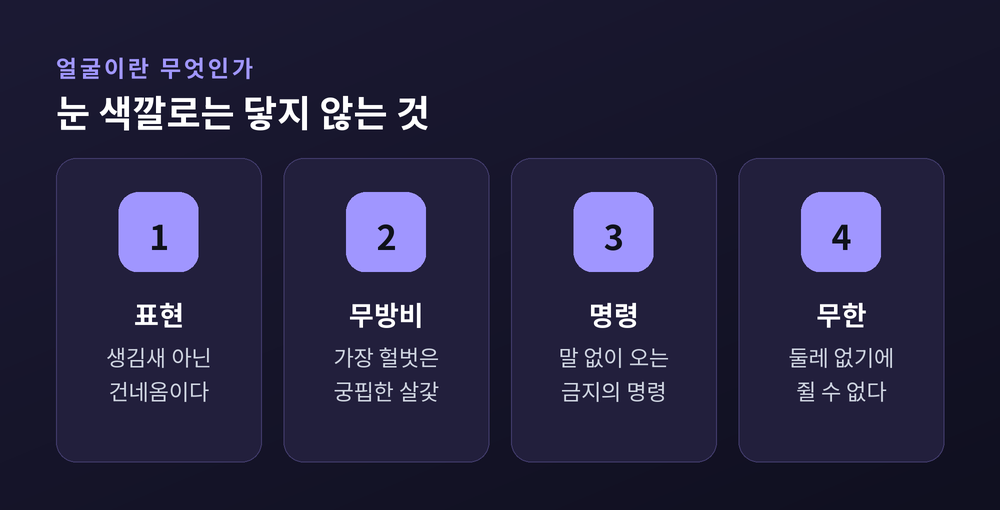
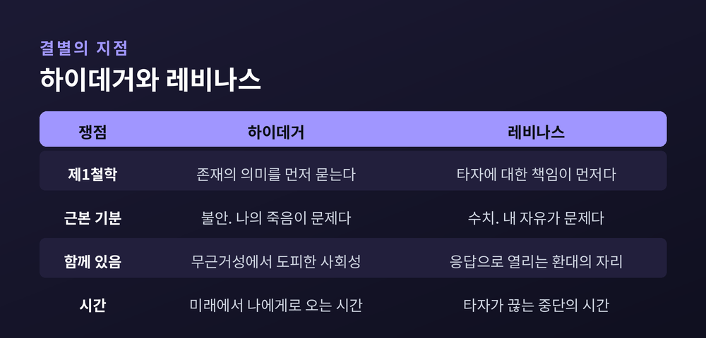
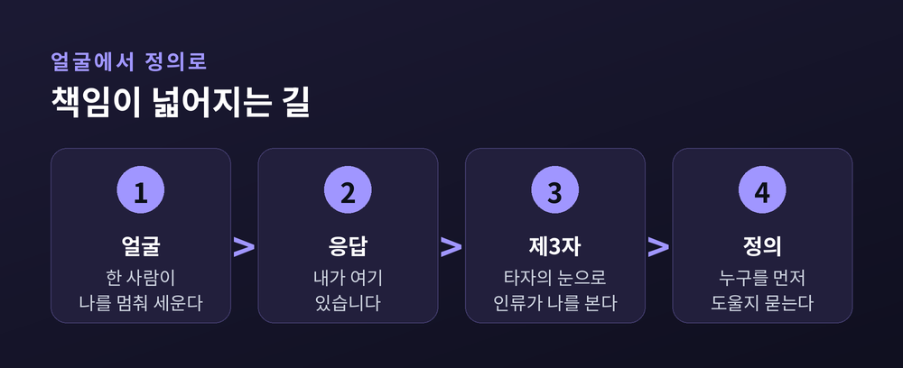
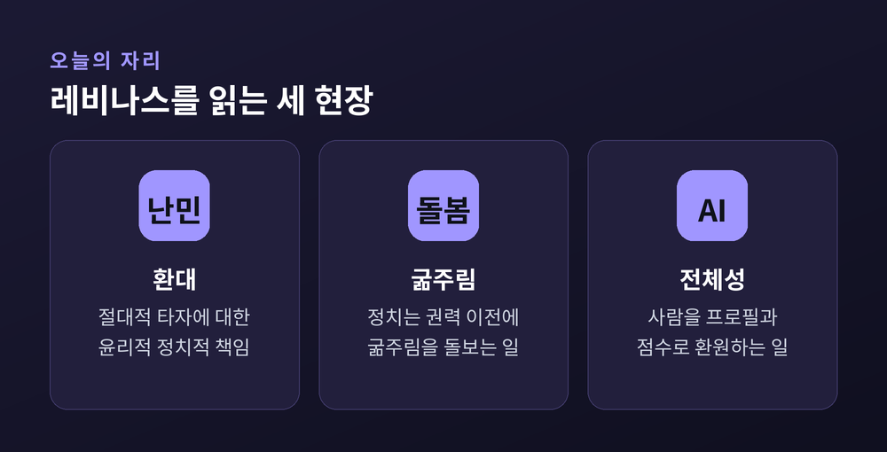

이번 글에서는 에마뉘엘 레비나스의 '타자의 얼굴'을 정리해 보겠습니다. 서양 철학이 오랫동안 존재를 묻는 자리에 두었던 제1철학을, 그는 윤리학으로 바꾸어 놓았습니다. 그 전환이 무엇을 뜻하는지 차근히 따라가 보겠습니다.
먼저 오해 하나를 걷어내야 합니다.
레비나스가 말하는 얼굴(visage)은 눈에 보이는 생김새가 아닙니다. 필립 네모와 나눈 대담집 『윤리와 무한』에서 그는 이렇게 말했습니다.
"타자를 만나는 가장 좋은 방법은 그의 눈 색깔조차 알아차리지 않는 것입니다."
코와 눈과 이마와 턱을 보고 그것을 기술할 수 있을 때, 우리는 이미 타인을 대상처럼 대하고 있습니다. 눈 색깔을 관찰하는 사람은 상대와 사회적 관계 안에 있지 않습니다. 레비나스의 표현을 빌리면 "얼굴에의 접근은 곧바로 윤리적"입니다.
그러니 얼굴은 조형적 형태가 아닙니다. 스탠퍼드 철학사전의 정리에 따르면 얼굴은 무엇보다 표현성입니다. 그리고 그 표현은 나의 자유로운 활동을 중단시키고, 나로 하여금 나 자신을 해명하게 만듭니다.
낯선 사람과 눈이 마주쳤을 때 잠깐 멈칫하는 그 순간을 떠올려 보시면 좋겠습니다. 그가 누구인지 알기도 전에 무언가가 이미 일어납니다. 레비나스가 붙잡으려 한 것이 바로 그 찰나입니다.
'제1철학'은 철학이 가장 먼저 물어야 할 물음을 뜻합니다.
전통적으로 그 자리는 형이상학이나 신학의 몫이었습니다. 20세기에 하이데거는 그것을 기초존재론으로 다시 짰습니다. 존재란 무엇인가, 이 물음이 모든 물음에 앞선다는 것이었습니다.
레비나스는 그 자리에 윤리학을 놓았습니다.
주의할 점이 하나 있습니다. 그가 윤리 '이론'을 만든 것은 아닙니다. 스탠퍼드 철학사전은 그의 작업을 "다른 사람을 만나는 사건에 대한 기술과 해석"이라고 요약합니다. 규칙을 세운 것이 아니라, 이미 일어나고 있는 일을 그려 보인 것입니다.
그 만남은 반성이나 이해타산보다 먼저 일어납니다. 몸으로 겪는 감성의 층위에서 벌어지는 일이기 때문입니다. 그래서 상호주관적 책임의 현상학이 '제1의' 철학이 됩니다.
논평자들의 평가는 갈립니다. '윤리의 윤리'라고 부르는 이도 있고, 메타윤리로 보는 이도 있습니다. 어느 쪽이든 방향은 같습니다. 철학은 앎에서 시작하지 않는다는 것입니다.
레비나스는 철학을 "지혜에 대한 사랑"이 아니라 "사랑의 지혜"로 부르기를 좋아했습니다.

레비나스의 1961년 주저 제목이 『전체성과 무한』입니다. 이 두 낱말이 그의 문제의식을 그대로 담고 있습니다.
브리태니커에 이 항목을 쓴 리처드 월린은 이렇게 정리합니다. 레비나스가 보기에 존재론은 그 본성상 하나의 전체를 만들어내려 하며, 그 안에서 다르고 '타자'인 것은 필연적으로 동일성으로 환원됩니다.
낯선 것을 만나면 우리는 그것을 아는 것으로 바꿉니다. 분류하고 이름 붙이고 설명합니다. 그 과정에서 낯섦은 사라집니다. 이해했다고 말하는 순간, 상대는 더 이상 나를 놀라게 하지 못합니다.
월린은 여기에 한 걸음을 더 얹습니다. 이 전체화의 욕망은 '도구적 이성'의 근본 발현이라는 것입니다. 도구적 이성은 목적이 아니라 가장 효율적인 수단만 계산합니다. 목적 자체가 파괴적일 때 그것을 막을 방법이 없습니다. 레비나스가 20세기 유럽의 대재앙, 특히 전체주의의 도래를 이 지점과 연결해 본 이유입니다.
그가 『전체성과 무한』 서문에서 역사를 폭력으로, 전쟁과 잠시의 평화가 오가는 것으로 그린 것도 같은 맥락입니다. 국가는 상거래와 갈등을 관리하고 전쟁을 선포합니다. 헤겔의 변증법이 개인을 집단으로 통합해 가듯이 말입니다.
서문의 첫 문장이 서늘합니다.
"우리가 도덕에 속고 있는 것은 아닌지 아는 일이 지극히 중요하다는 데에는 누구나 쉽게 동의할 것이다."
전체성의 반대편에 무한이 있습니다.
무한은 한계 지을 수 없는 것, 둘레를 그을 수 없는 것을 뜻합니다. 레비나스가 이 말로 가리키는 것은 얼굴의 표현이 지닌 예측 불가능성입니다.
"무한을, 초월을, 낯선 자를 사유한다는 것은 하나의 대상을 사유하는 일이 아니다. 그러나 대상의 윤곽을 갖지 않는 것을 사유한다는 것은, 실은 사유하는 것보다 더한 일을 하는 것이다."
여기서 그는 '형이상학적 욕망'이라는 말을 씁니다. 충족될 수 없는 욕망입니다. 배고픔은 밥으로 채워지고 갈증은 물로 채워집니다. 그러나 이 욕망은 다릅니다. 레비나스의 문장은 이렇습니다. 그것은 자기를 채워줄 수 있는 모든 것 너머를 욕망하며, 욕망되는 것이 그것을 채우는 대신 오히려 깊게 만든다고요.
브리태니커의 대비가 명료합니다. 존재론은 타자를 이론이성의 판단 대상으로 다루므로 그를 유한한 존재로 취급하고, 그 관계가 곧 전체성입니다. 반면 타자에게 진 도덕적 빚은 결코 갚을 수 없으며, 그 관계가 곧 무한입니다.
타인은 "무한히 초월적이고 무한히 낯설다"는 것입니다.

레비나스의 가장 유명한 대목입니다.
얼굴은 벌거벗고 무방비합니다. 그는 얼굴의 살갗이 가장 헐벗고 가장 궁핍한 것으로 남아 있다고 썼습니다. 옷으로도 표정으로도 완전히 가려지지 않는 부분이 있다는 뜻입니다.
그런데 바로 그 무방비함이 명령이 됩니다.
스탠퍼드 철학사전의 문장을 그대로 옮기면 이렇습니다. 벌거벗고 무방비인 얼굴은, 말이 있든 없든 "나를 죽이지 말라"고 의미합니다. 그것은 우리의 지배 욕망에 수동적 저항으로 맞섭니다.
무기를 든 저항이 아닙니다. 힘으로 막아서는 것이 아닙니다. 오히려 아무것도 할 수 없다는 사실 자체가 나를 붙잡습니다.
'나'는 타자의 시선에 지목될 때 비로소 자신의 고유성을 발견합니다. 그 시선은 묻는 시선이자 명령하는 시선입니다.
여기서 수치라는 감정이 등장합니다. 수치 속에서 우리는 자기 자유가 정당화될 수 없음을 경험합니다. 그렇게 자기 관심사에서 들어올려진 나는 상대에게 해명을 내놓고, 그로써 상대는 나보다 높은 자리에 놓입니다.
그리고 나는 응답하도록 '선택'됩니다. 레비나스가 즐겨 쓴 히브리적 표현이 여기 있습니다. "내가 여기 있습니다."
레비나스는 살인이라는 극단마저 실패한다고 봅니다. 죽여도 타자성은 손에 잡히지 않습니다. 없앨 수는 있어도 소유할 수는 없기 때문입니다.
여기서 많은 분들이 걸려 넘어지십니다. 그러면 상대는 나에게 아무 책임이 없느냐는 물음입니다.
레비나스의 답은 뜻밖에도 그렇다는 쪽입니다.
윤리적 관계는 구조적으로 비대칭입니다. 나는 타자에게 모든 것을 빚지고, 타자는 나에게 아무것도 빚지지 않습니다. 상호성은 상대의 몫이지 내가 계산할 몫이 아닙니다.
계약이 아니기 때문입니다. 계약은 주고받음을 전제하지만, 얼굴은 내가 동의하기 전에 이미 나를 부릅니다.
1974년의 두 번째 주저 『존재와 다르게』에서 이 생각은 더 밀고 나갑니다. 이 책은 1968년에 먼저 발표된 「대속」이라는 장을 중심으로 자라났습니다. 대속이란 타자의 자리를 대신 떠맡는 일입니다.
여기서 그는 자기를 인질이라 부릅니다. 타자의 필요와 고통을 위해 붙들린 자, 자기가 하지 않은 일에까지 응답해야 하는 자입니다.
"나의 모든 내면성은 '나에게도 불구하고, 타자를 위하여'의 형태로 투자된다."
그가 얼마나 멀리 갔는지 보여주는 문장이 하나 더 있습니다. 얼굴은 자기 자신의 흔적이며, 마치 내가 그의 죽을 운명에 책임이 있고 살아남았다는 것에 죄책이 있는 것처럼 나에게 넘겨진다고 그는 썼습니다.
과하다고 느끼실 수 있습니다. 저도 그렇습니다. 다만 이 문장을 쓴 사람이 어떤 시간을 통과했는지는 알아둘 만합니다.
레비나스는 1906년 1월 리투아니아 카우나스의 유대인 가정에서 태어났습니다. 자료에 따라 1905년으로 적히기도 하는데요. 율리우스력과 그레고리력의 차이일 뿐 같은 날입니다.
1923년 프랑스 스트라스부르에서 철학을 시작했고, 1928년부터 이듬해까지 독일 프라이부르크에서 후설에게 현상학을 배웠습니다. 같은 시기 하이데거의 세미나에도 참석했습니다. 1930년에는 후설 현상학의 직관 이론을 다룬 학위논문을 냈고, 1931년에는 후설의 『데카르트적 성찰』을 프랑스어로 옮겼습니다. 프랑스에 현상학을 들여온 사람 중 하나였습니다.
예전에 그는 하이데거에게 매혹된 젊은 독자였습니다. 지금 우리가 읽는 레비나스는 그 매혹과 결별한 사람입니다.
1939년 프랑스로 귀화해 장교로 입대했고, 1940년 독일군에 붙잡혀 종전까지 하노버 인근 팔링보스텔 수용소에서 지냈습니다. 유대인 포로 전용 막사에 배치되었지만, 전쟁포로 신분 덕분에 강제수용소는 면했습니다.
가족은 그렇지 못했습니다. 리투아니아에 있던 아버지와 두 형제가 SS에 의해 살해되었습니다. 아내와 딸은 벗 모리스 블랑쇼의 도움으로 수녀원에 숨어 살아남았습니다.
수용소에서 그는 자주 노트에 무언가를 적었습니다. 그 메모가 훗날 『존재에서 존재자로』가 됩니다.
『존재에서 존재자로』에서 그는 "하이데거 철학의 기후를 떠나야 한다는 깊은 필요"를 말했습니다.
무엇이 문제였을까요. 레비나스가 보기에 하이데거의 불안은 끝내 유아론적입니다. 문제 되는 것은 '나의' 자유와 '나의' 죽음이기 때문입니다. 함께있음(Mitsein)조차 현존재가 자기 무근거성에 시달릴 때 도피해 들어가는 사회성에 지나지 않습니다.
그래서 레비나스는 삶을 다르게 그립니다. 삶은 존재하려는 벌거벗은 의지가 아닙니다. 『전체성과 무한』의 문장이 정겹습니다.
"우리는 '좋은 수프', 공기, 빛, 구경거리, 노동, 관념, 잠 등으로부터 살아간다. 이것들은 표상의 대상이 아니다. 우리는 그것들로부터 산다."
향유가 있기에 집이 있고, 집이 있기에 손님을 맞을 수 있습니다. 레비나스가 노동을 자연의 지배가 아니라 타자를 환대하기 위한 비축으로 다시 읽은 이유입니다.

레비나스의 사유는 조용히 받아들여지지 않았습니다.
1964년 자크 데리다가 「폭력과 형이상학: 에마뉘엘 레비나스의 사유에 관한 에세이」를 발표합니다. 훗날 『글쓰기와 차이』에 실린 이 글은 레비나스를 세상에 알린 최초의 본격 소개이자, 생전에 그가 받은 가장 큰 비판이었습니다.
비판의 핵심은 언어였습니다. 타자의 절대적 타자성을 말하려면 결국 철학의 언어를 써야 합니다. 그런데 그 언어 자체가 이미 타자를 주제로 삼아 붙잡습니다. 전체성을 비판하는 문장이 전체성의 문법으로 쓰이는 셈입니다.
데리다는 레비나스의 시도를 "언어에 상처 내기"라고 불렀습니다. 철학 자신의 빛으로 철학의 표면이 심하게 갈라져 있음을 드러내려는 시도라고요.
레비나스는 이 비판을 흘려보내지 않았습니다. 학계에는 『존재와 다르게』를 「폭력과 형이상학」에 대한 응답으로 읽는 독법이 뚜렷하게 있습니다.
응답의 핵심이 말함(le Dire)과 말해진 것(le Dit)의 구별입니다.
말해진 것은 주제화된 내용입니다. 개념과 명제 속에 고정된 의미이고, 그래서 타자성을 총체화할 위험을 안습니다. 반면 말함은 그 이전입니다. 무엇을 말하기에 앞서 누군가에게 자기를 노출하고 건네는 일입니다.
스탠퍼드 철학사전은 이를 전지향적 감각의 순간과 그것이 의식 안에서 지향화되는 것 사이의 '시간적 지체'로 설명합니다. 의미작용은 애초에 정서적 전지향성이지, 이미 만들어진 생각을 전달하기로 결정하는 일이 아니라는 것입니다.
흥미로운 점은 그가 자기 논의도 예외로 두지 않았다는 것입니다. 회의주의조차 모든 총체화하는 담론을 해체하라는 윤리적 명법에 복종한다고 그는 말합니다. 그리고 덧붙입니다. 듣는 자에게 말함으로써 모든 담론이 진술되며, 그것은 "지금 이 순간 내가 전개하고 있는 이 논의"에 대해서도 참이라고요.
한계를 짚지 않으면 공정하지 않겠습니다.
첫째, 정치의 문제입니다. 얼굴 앞의 책임은 한 사람과 한 사람 사이의 일입니다. 그런데 세상에는 언제나 제3자가 있습니다. 레비나스도 이를 알고 있었습니다. 그는 얼굴-대-얼굴 속에서 제3자, 곧 인류 전체가 타자의 눈을 통해 나를 본다고 말합니다.
문제는 그 다음입니다. 대화가 넓어질수록 책임의 흔적은 옅어지고, 누구를 먼저 도와야 하는가라는 정의의 물음이 등장합니다. 레비나스는 이 대목에서 국가로 나아가는 대신 '가족'이라는 작은 제도로 방향을 틉니다.
질리언 로즈는 1992년에 이 보편화가 사회정치적 매개를 결여한다고 비판했습니다. 데리다도 같은 어려움을 지적했습니다. 게다가 그 가족론은 아버지의 선택과 아들의 봉사라는, 오늘의 눈으로 보면 가부장적인 언어로 전개됩니다.
둘째, 여성의 자리입니다. 이미 1949년에 시몬 드 보부아르가 『제2의 성』에서 레비나스의 주체가 필연적으로 남성적이며 여성적 타자에 대비되어 정의된다고 비판했습니다. 이 논쟁은 지금도 이어집니다. 티나 챈터처럼 그를 옹호한 철학자들이 있고, 시몬 크리츨리와 스텔라 샌드퍼드처럼 재비판한 이들도 있습니다.
셋째, 현실성의 문제입니다. 많은 논평자에게 이런 대인적 책임은 규칙이 아니라 예외로 보입니다. 가다머식 해석학의 관점에서 보면 책임은 타자의 추상적 부름이 아니라 대화와 축적된 전통에 기댑니다.
레비나스의 철학은 완결된 체계가 아닙니다. 그 점을 인정하고 읽는 편이 정직합니다.

레비나스는 1995년 12월 25일 파리에서 세상을 떠났습니다. 장례식에서 데리다가 추도사를 읽었습니다. 장뤽 마리옹은 추모 글에서 20세기 프랑스의 위대한 철학자로 베르그송과 레비나스 둘을 꼽았습니다.
그의 언어는 지금도 여러 자리에서 쓰이고 있습니다.
난민 논의가 그렇습니다. 레비나스에게 환대는 절대적 타자에 대한 윤리적 책임이자 정치적 책임입니다. 데리다는 이를 무조건적 환대로 확장하면서 국경과 주권 관념 자체에 물음을 던졌습니다. 통계로 셀 때와 한 사람의 얼굴을 볼 때, 같은 사안이 전혀 다르게 보인다는 사실을 우리는 이미 알고 있습니다.
돌봄도 그렇습니다. 안나벨 헤어초크의 독해에 따르면 레비나스에게 정치는 권력이나 권리이기 이전에 "사람들의 굶주림에 대한 염려와 돌봄"입니다.
그리고 인공지능입니다. 2026년 슈프링거의 『디스커버 로보틱스』에 실린 논문은 레비나스와 데리다의 틀이 인간과 로봇의 상호작용을 진단하는 데 유효하다고 봅니다. 여기서 '전체성'은 정확한 이름을 얻습니다. 사람을 시스템 안에서 판독 가능한 항목으로, 곧 유형과 프로필과 데이터셋과 예측된 행동과 위험 점수로 환원하는 것입니다.
다만 이 응용들은 학계에서 진행 중인 해석이지 레비나스 본인의 주장은 아닙니다. 그 구분은 지켜야 합니다.

정리하면 이렇습니다.
윤리는 내가 좋은 사람이 되기로 결심하는 데서 시작하지 않습니다. 내 앞에 선 누군가가 나를 멈춰 세우는 데서 시작합니다. 그 사람은 내가 이해하기 전에 이미 나에게 무언가를 요구합니다.
"타자를 만난다는 것은 무한의 관념을 갖는 것이다."
읽기 쉬운 철학자는 아닙니다. 문장은 겹겹이고 개념은 낯설며, 그가 남긴 물음 중 여럿은 아직 닫히지 않았습니다. 그럼에도 이 사람을 읽을 만하냐고 물으신다면, 저는 그렇다고 답하겠습니다. 오늘 지하철에서 스쳐 간 어떤 얼굴이 왜 잠깐 마음에 걸렸는지, 그 이유를 이만큼 정확하게 설명한 사람을 저는 아직 만나지 못했습니다.